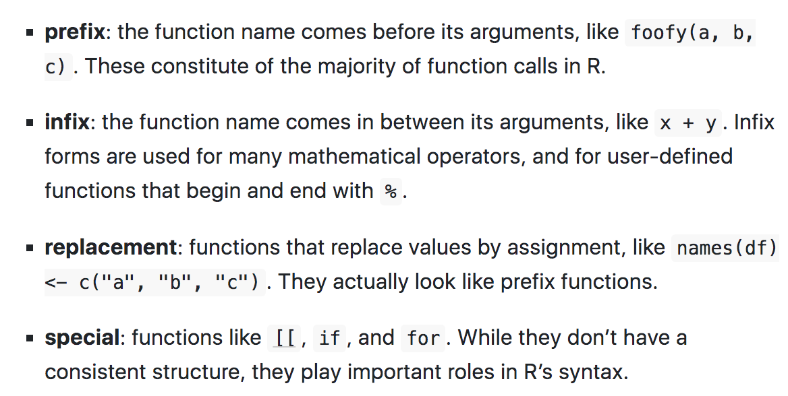

Functions
Learning objectives:
- How to make functions in R
- What are the parts of a function
- Nested functions
How to make a simple function in R
Let’s imagine the structure of a function:

The black dot on the left is the environment. The two blocks to the right are the function arguments.
Function components
Functions have three parts, formals(), body(), and environment().
Example
#> # A tibble: 3 × 5
#> total_cup_points species owner country_of_origin farm_name
#> <dbl> <chr> <chr> <chr> <chr>
#> 1 90.6 Arabica metad plc Ethiopia "metad pl…
#> 2 89.9 Arabica metad plc Ethiopia "metad pl…
#> 3 89.8 Arabica grounds for health admin Guatemala "san marc…#> # A tibble: 1 × 1
#> mean
#> <dbl>
#> 1 82.1#> $species#> {
#> avg <- coffee_ratings %>% filter(species == species) %>%
#> summarise(mean = mean(total_cup_points))
#> return(avg)
#> }#> <environment: R_GlobalEnv>Functions uses attributes, one attribute used by base R is srcref, short for source reference. It points to the source code used to create the function. It contains code comments and other formatting.
#> NULLPrimitive functions
Are the core function in base R, such as sum()
#> function (..., na.rm = FALSE) .Primitive("sum")Type of primitives:
- builtin
- special
#> [1] "builtin"These core functions have components to NULL.
Anonymous functions
If you don’t provide a name to a function
#> $mpg
#> [1] 25
#>
#> $cyl
#> [1] 3#> $mpg
#> [1] 25
#>
#> $cyl
#> [1] 3Invoking a function
#> # A tibble: 1 × 1
#> mean
#> <dbl>
#> 1 82.1Function composition
#> [1] 0.2925195#> [1] 0.2925195#> [1] 0.2925195More about functions insights
Lexical scoping
Rules
- Name masking
- Functions versus variables
- A fresh start
- Dynamic lookup
Debugging
This function
#> [1] 16#> [1] "+" "x"You can change the function’s environment to an environment which contains nothing:
… (dot-dot-dot)
Example
#> List of 2
#> $ y: num 2
#> $ z: num 3Exiting a function
Implicit or explicit returns
Invisibility (
<-most famous function that returns an invisible value)stop()to stop a function with an error.Exit handlers
Function forms
Everything that exists is an object. Everything that happens is a function call. — John Chambers
Case Study: SIR model function
This is an interesting example taken from a course on Coursera: Infectious disease modelling-ICL
The purpose of this example is to show how to make a model passing through making a function.
First we need to load some useful libraries:
Then set the model inputs:
- population size (N)
- number of susceptable (S)
- infected (I)
- recovered (R)
And add the model parameters:
- infection rate (\(\beta\))
- recovery rate (\(\gamma\))
Then we set the time as an important factor, which defines the length of time we are looking at this model run. It is intended as the time range in which the infections spread out, let’s say that we are aiming to investigate an infection period of 100 days.
Finally, we set up the SIR model, the susceptable, infected and recovered model. How do we do that is passing the paramenters through a function of the time, and state.
Within the model function we calculate one more paramenter, the force of infection: \(\lambda\)
Once we have our SIR model function ready, we can calculate the output of the model, with the help of the function ode() from {deSolve} package.
#> time S I R
#> 1 0 99999.00 1.000000 0.0000000
#> 2 1 99998.43 1.284018 0.2840252
#> 3 2 99997.70 1.648696 0.6487171
#> 4 3 99996.77 2.116939 1.1169863
#> 5 4 99995.56 2.718152 1.7182450
#> 6 5 99994.02 3.490086 2.4902600In addition to our builtin SIR model function we can have a look at:
It solves Ordinary Differential Equations.
#> function (y, times, func, parms, method = c("lsoda", "lsode",
#> "lsodes", "lsodar", "vode", "daspk", "euler", "rk4", "ode23",
#> "ode45", "radau", "bdf", "bdf_d", "adams", "impAdams", "impAdams_d",
#> "iteration"), ...)
#> {
#> if (is.null(method))
#> method <- "lsoda"
#> if (is.list(method)) {
#> if (!inherits(method, "rkMethod"))
#> stop("'method' should be given as string or as a list of class 'rkMethod'")
#> out <- rk(y, times, func, parms, method = method, ...)
#> }
#> else if (is.function(method))
#> out <- method(y, times, func, parms, ...)
#> else if (is.complex(y))
#> out <- switch(match.arg(method), vode = zvode(y, times,
#> func, parms, ...), bdf = zvode(y, times, func, parms,
#> mf = 22, ...), bdf_d = zvode(y, times, func, parms,
#> mf = 23, ...), adams = zvode(y, times, func, parms,
#> mf = 10, ...), impAdams = zvode(y, times, func, parms,
#> mf = 12, ...), impAdams_d = zvode(y, times, func,
#> parms, mf = 13, ...))
#> else out <- switch(match.arg(method), lsoda = lsoda(y, times,
#> func, parms, ...), vode = vode(y, times, func, parms,
#> ...), lsode = lsode(y, times, func, parms, ...), lsodes = lsodes(y,
#> times, func, parms, ...), lsodar = lsodar(y, times, func,
#> parms, ...), daspk = daspk(y, times, func, parms, ...),
#> euler = rk(y, times, func, parms, method = "euler", ...),
#> rk4 = rk(y, times, func, parms, method = "rk4", ...),
#> ode23 = rk(y, times, func, parms, method = "ode23", ...),
#> ode45 = rk(y, times, func, parms, method = "ode45", ...),
#> radau = radau(y, times, func, parms, ...), bdf = lsode(y,
#> times, func, parms, mf = 22, ...), bdf_d = lsode(y,
#> times, func, parms, mf = 23, ...), adams = lsode(y,
#> times, func, parms, mf = 10, ...), impAdams = lsode(y,
#> times, func, parms, mf = 12, ...), impAdams_d = lsode(y,
#> times, func, parms, mf = 13, ...), iteration = iteration(y,
#> times, func, parms, ...))
#> return(out)
#> }
#> <bytecode: 0x56163d191e08>
#> <environment: namespace:deSolve>#> [1] ode.1D ode.2D ode.3D ode.band
#> see '?methods' for accessing help and source codeWith the help of the {reshape2} package we use the function melt() to reshape the output:
#> time variable value
#> 1 0 S 99999.00
#> 2 1 S 99998.43
#> 3 2 S 99997.70
#> 4 3 S 99996.77
#> 5 4 S 99995.56
#> 6 5 S 99994.02The same as usign pivot_longer() function.
#> # A tibble: 6 × 3
#> time variable values
#> <dbl> <chr> <dbl>
#> 1 0 S 99999
#> 2 1 S 99998.
#> 3 2 S 99998.
#> 4 3 S 99997.
#> 5 4 S 99996.
#> 6 5 S 99994.Before to proceed with the visualization of the SIR model output we do a bit of investigations.
What if we want to see how melt() function works?
What instruments we can use to see inside the function and understand how it works?
Using just the function name melt or structure() function with melt as an argument, we obtain the same output. To select just the argument of the function we can do args(melt)
#> function (data, ..., na.rm = FALSE, value.name = "value")
#> {
#> UseMethod("melt", data)
#> }
#> <bytecode: 0x56163c891980>
#> <environment: namespace:reshape2>#> {
#> UseMethod("melt", data)
#> }#> $data
#>
#>
#> $...
#>
#>
#> $na.rm
#> [1] FALSE
#>
#> $value.name
#> [1] "value"#> <environment: namespace:reshape2>#> [1] "closure"“R functions simulate a closure by keeping an explicit reference to the environment that was active when the function was defined.”
ref: closures
Try with methods(), or print(methods(melt)): Non-visible functions are asterisked!
The S3 method name is followed by an asterisk * if the method definition is not exported from the package namespace in which the method is defined.
#> [1] melt.array* melt.data.frame* melt.default* melt.list*
#> [5] melt.matrix* melt.table*
#> see '?methods' for accessing help and source code#> [1] [ aperm as_tibble as.data.frame Axis
#> [6] coerce initialize lines melt plot
#> [11] points print show slotsFromS3 summary
#> [16] tail
#> see '?methods' for accessing help and source codeWe can access to some of the above calls with getAnywhere(), for example here is done for “melt.data.frame”:
#> A single object matching 'melt.data.frame' was found
#> It was found in the following places
#> registered S3 method for melt from namespace reshape2
#> namespace:reshape2
#> with value
#>
#> function (data, id.vars, measure.vars, variable.name = "variable",
#> ..., na.rm = FALSE, value.name = "value", factorsAsStrings = TRUE)
#> {
#> vars <- melt_check(data, id.vars, measure.vars, variable.name,
#> value.name)
#> id.ind <- match(vars$id, names(data))
#> measure.ind <- match(vars$measure, names(data))
#> if (!length(measure.ind)) {
#> return(data[id.vars])
#> }
#> args <- normalize_melt_arguments(data, measure.ind, factorsAsStrings)
#> measure.attributes <- args$measure.attributes
#> factorsAsStrings <- args$factorsAsStrings
#> valueAsFactor <- "factor" %in% measure.attributes$class
#> df <- melt_dataframe(data, as.integer(id.ind - 1), as.integer(measure.ind -
#> 1), as.character(variable.name), as.character(value.name),
#> as.pairlist(measure.attributes), as.logical(factorsAsStrings),
#> as.logical(valueAsFactor))
#> if (na.rm) {
#> return(df[!is.na(df[[value.name]]), ])
#> }
#> else {
#> return(df)
#> }
#> }
#> <bytecode: 0x5616388b81f8>
#> <environment: namespace:reshape2>References:
Going back to out model output visualization.


Meeting Videos
Cohort 1
Cohort 2
Cohort 3
Cohort 4
Cohort 5
Cohort 6
Meeting chat log
00:01:11 Oluwafemi Oyedele: Hi, Good evening
00:01:22 Federica Gazzelloni: Hello!
00:43:19 Federica Gazzelloni: https://r4ds.github.io/bookclub-Advanced_R/QandA/docs/welcome.html
00:52:48 Priyanka: sounds good actually
00:52:59 Federica Gazzelloni: üëçüèªMeeting chat log
00:09:30 Oluwafemi Oyedele: Hi, Good evening
00:10:41 Federica Gazzelloni: Hi
00:14:40 Federica Gazzelloni: that's great!
00:54:24 Trevin: Also, sorry if you are repeating üôÇ
00:54:52 Arthur Shaw: @ryan, thank you so much for the awesome synthesis! Could you share your reference list? I'd love to dive more deeply into the material you presented.
00:57:02 Ryan Metcalf: https://cran.r-project.org/doc/manuals/r-release/R-lang.pdf
00:59:32 Trevin: https://github.com/COHHIO/RmData
01:01:48 Ryan Metcalf: https://mastering-shiny.org/
01:02:02 Ryan Metcalf: https://engineering-shiny.org/
01:02:15 Arthur Shaw: @trevin, if you get bored with beepr, move to BRRR ;)
01:02:16 Arthur Shaw: https://github.com/brooke-watson/BRRR
01:09:27 Ryan Metcalf: This is amazing Trevin! I'll take a closer look. Is it ok to reach out to you with any questions?
01:09:43 Trevin: Yeah, feel free to reach outMeeting chat log
00:05:34 Trevin: I didn't catch that
00:06:02 priyanka gagneja: i won't be presenting I said .. so you two have the stage
00:08:39 Federica Gazzelloni: no worries
00:08:46 Federica Gazzelloni: next time you do it
00:08:56 Federica Gazzelloni: did you sign up?
00:09:45 Trevin: Discord is free: https://discord.gg/rstudioconf2022
00:10:04 Trevin: Free stream link: https://www.rstudio.com/conference/stream
00:24:32 Arthur Shaw: Maybe silly question: is the magrittr pipe an infix function?
00:32:15 Trevin: https://colinfay.me/playing-r-infix-functions/
00:33:23 Arthur Shaw: Maybe another example of an infix function: lubridate's `%within%`
00:33:47 Trevin: That's a good one too ^
00:33:55 priyanka gagneja: yes within would be good.
00:40:13 Arthur Shaw: no
00:49:50 Arthur Shaw: Sorry for dropping in and out. My WiFi router is having issues today--maybe is failing.
01:08:59 Trevin: Looking forward to it üôÇCohort 7
Meeting chat log
00:31:54 Ronald Legere: https://en.wikipedia.org/wiki/First-class_function
00:42:55 Ronald Legere: https://en.wikipedia.org/wiki/Immediately_invoked_function_expressionMeeting chat log
00:54:02 Ron: Book gives this simple example of when you might want to use prefix form of an infix operator: lapply(list(1:3, 4:5), `+`, 3)
00:56:49 collinberke: https://colinfay.me/playing-r-infix-functions/#:~:text=What%20are%20infix%20functions%3F,%2C%20%2B%20%2C%20and%20so%20on.
01:07:36 Ron: x[3] <- 33
01:07:51 Ron: `[<-`(x,3,value =33)